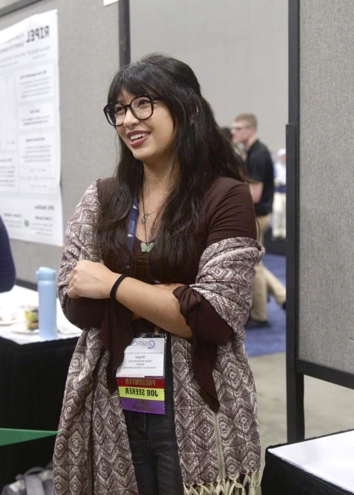

welcome to my digital garden
please pardon the chaos as it continues to grow
I'm abby (she/ella) & I'm a Masters student in Computer Science at UC Berkeley where I study computing education. I'm grateful to be supported by the GEM Fellowship and my Faculty Advisor, Professor Lisa Yan. I care deeply about teaching computer science in a manner that is culturally relevant, liberatory, and offers students agency within the sociotechnical systems they inhabit. Beyond the classroom I keep busy with my cats Jícama y Mango